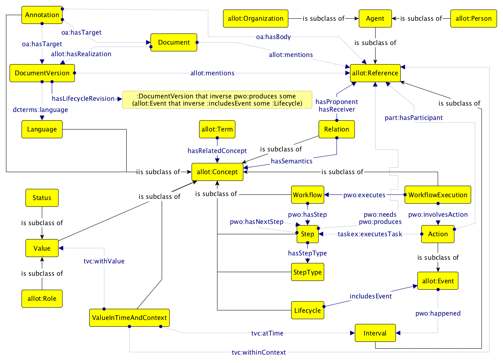

Akoma Ntoso is an OASIS Committee Specification Draft standard for the electronic representations of parliamentary, normative and judicial documents in XML. Recently, it has been officially adopted by the United Nations (UN) as the main electronic format for making UN documents machine-processable. However, Akoma Ntoso does not force nor define any formal ontology for allowing the description of real-world objects, concepts and relations mentioned in documents. In order to address this gap, in this paper we introduce the United Nations System Document Ontology (UNDO), i.e. an OWL 2 DL ontology developed and adopted by the United Nations that aims at providing a framework for the formal description of all these entities.
The parliamentary, normative and judicial documents published by the United Nations System of organizations are full of references to real-world objects and concepts, such as other documents, people, organizations, legal terms, roles and deliberation steps. The United Nations has recently started to adopt Akoma Ntoso , an XML language that is in the process of becoming an OASIS standard, for providing an electronic representations of all UN Documents and the entities they contain. While it is not defined formally, Akoma Ntoso introduce a sort of informal ontological structure for all the entities it allows one to describe, according to two kinds of classes:
document classes focus on representing the different aspects of a document as intellectual creation, the forms (versions, translations, etc.), its physical embodiment (e.g. PDF, XML, HTML, paper, etc.);
non-document classes focus on representing the responsible for the production of the content and what the content is about (e.g. concept, object, event, locations, roles, deliberation steps, etc.).
While the informal definition of document classes is based on the Functional Requirements for Bibliographic Records (FRBR) standard of the International Federation of Library Associations (IFLA), in the Akoma Ntoso specification there is no explicit mention of a possible adoption of a certain model for addressing the description of non-document entities.
As one of the outcomes of the work that the High-Level Committee on Management (HLCM) Working Group on Document Standards of the United Nations has done in the past year, in this paper we introduce the United Nations System Document Ontology (UNDO), i.e. an OWL 2 DL ontology developed and adopted by the United Nations that aims at providing a framework for the formal description of all entities and the relations that can exist among them in UN Documents. The idea behind the development of this model is to have a mechanism for sharing data about any legal/legislative/parliamentary document and its content in RDF format in an interchangeable way and, eventually, to allow the various agencies of the United Nations to extend it so as to meet their own domain specific requirements. In addition, UNDO follows the FAIR principles: it is identified with a w3id.org persistent identifier, it has been made available in different formats accessible by means of the classic content negotiation mechanism, it reuses several existing ontologies so as to increase interoperability, and it has been made available with a CC-BY license for enabling its reuse.
The rest of the document is organized as follows. In we introduce all the methods and existing models that have been adopted and reuse for the development of UNDO. In we provide a brief introduction of UNDO, highlighting its main intended coverage and features. In we address some possible applications of the ontology for modelling the documents published by the United Nations. Finally, in , we conclude the paper sketching out some future works.
Akoma Ntoso and ALLOT. Akoma Ntoso is an XML vocabulary for legal and legislative documents whose primary objective is to provide semantic information on top of a received legal text. Akoma Ntoso does not prescribe the use of a particular ontology. Actually Akoma Ntoso defines a minimal and loose ontology based on FRBR and other eight Top Level Classes (TLCs) informally defining generic concepts such as person, role, event, etc. ALLOT (https://w3id.org/akn/ontology/allot) is an implementation of such TLCs as a formal OWL 2 DL ontology. It has been aligned to two important foundational ontologies, i.e. BFO and DOLCE , so as to enable the reusability of the model in different contexts and domains (e.g. BFO is already used in several models adopted by the United Nations) and to provide a methodological organization of all the TLCs and their relations. The adoption of ALLOT as starting point for the development of UNDO is crucial for guaranteeing the best interoperability with Akoma Ntoso documents.
Development tools. SAMOD is a novel agile methodology for the development of ontologies that is organised in three simple steps within an iterative process that focuses on creating well-developed and documented models. It has been used to develop UNDO since the beginning, in combination with LODE, Graffoo, and DiTTO. LODE is a service that renders entities defined in an OWL ontology in a human-readable HTML page designed for browsing and navigation by means of embedded links. Graffoo is an open source tool that can be used to present the classes, properties and restrictions within OWL ontologies, or sub-sections of them, as clear and easy-to-understand diagrams. DiTTO is a Web application that is able to translate diagrams expressed in Graffoo into OWL ontologies. In the context of the development of UNDO, LODE has been used to produce its HTML documentation, Graffoo has been used to create draft diagrams during the development of UNDO and the final diagram summarising the ontology, while DiTTO has been used to convert the Graffoo diagrams of the draft of the ontology into OWL automatically.
Other ontologies reused. For describing a domain concerning documents, and the entities they describe, other ontologies are relevant and, therefore, have been directly reused in UNDO. Time-indexed Value in Context (TVC) is an ontology pattern that allows one to describe scenarios in which someone (e.g., a person) has a value (e.g., a particular role) during a particular time and for a particular context. Time Interval (http://www.ontologydesignpatterns.org/cp/owl/timeinterval.owl) is an ontology pattern that enables the description of period of times characterised by a starting date and an ending date. Web Annotation Ontology (http://w3.org/ns/oa) is a set of RDF classes, predicates and named entities that are used by the Web Annotation Data Model for creating annotations in RDF. DC Terms (http://purl.org/dc/terms/) is an ontology implementing all the metadata terms maintained by the Dublin Core Metadata Initiative, including properties, vocabulary encoding schemes, syntax encoding schemes, and classes. FOAF (http://xmlns.com/foaf/0.1/) is an ontology for describing people and their relations with other people, documents, and other information objects. ISO 639-1 (http://id.loc.gov/vocabulary/iso639-1) is a vocabulary describing the first part of the ISO 639 international-standard language-code family. LKIF Core (http://www.estrellaproject.org/lkif-core/lkif-core.owl) is a library of ontologies relevant for describing concepts from both legal and common-sense domains. The SKOS (http://www.w3.org/2004/02/skos/core) is a common data model for sharing and linking knowledge organization systems via the Web. Finally, several ontological modules among the SPAR Ontologies have been used as well, since they have been developed to deal with several aspects of the document and publishing domain at large, such as document metadata, document statuses, publishing agent's roles, and publishing workflow processes.
The United Nations System Document Ontology (UNDO), available at https://w3id.org/un/ontology/undo, is an OWL 2 DL ontologies that enables the description of UN Documents (and the entities they mention) in RDF. While UNDO has been developed from scratch by using SAMOD (after three iterations of the process, as documented in the GitHub repository of the ontology, i.e. https://w3id.org/un/repository/undo, in the directory development
), we have also reused existing and well-known models (briefly introduced in ) so as to make the ontology interoperable in different context. In particular, UNDO does not redefine properties that have been already defined elsewhere. For instance, all the data properties for describing the title (dcterms:title) , the year of publication (fabio:hasPublicationYear), and other similar metadata, are already available in the FRBR-aligned Bibliographic Ontology (FaBiO, http://purl.org/spar/fabio) to which UNDO is explicitly aligning with, and thus, in these cases, such properties should be preferred and used.
So as to regulate the way the entities defined in such external models have been reused, we have applied the following guidelines:
some of these ontologies (e.g. ALLOT, TVC, and Web Annotation Ontology) have been imported as a whole (by means of the property owl:imports), since some of them have entities that are directly reused in UNDO for providing a description of the domain in consideration (e.g. we use allot:hasRealization to link a document to its version in a specific language) ;
some ontological entities defined in external models (e.g. DCTerms, FOAF, and ISO 639-1, referred via rdfs:isDefinedBy) have been reused in UNDO (e.g. dcterms:language) without importing the original models since they have not been defined formally as OWL 2 DL ontologies;
other ontological entities defined in external models (e.g. FaBiO, LKIF Core, and SKOS, referred via rdfs:isDefinedBy), which are proper OWL 2 DL ontologies, have been included for the sake of aligning UNDO with other relevant and existing models.
However, since UNDO should be intended as a domain ontology that could be extend by any party (e.g. a United Nations agency) for specific purposes, it is also possible to develop or reuse a different set of ontological entities for describing the part of the domain that are not explicitly defined in UNDO – being care of keeping the ontology consistent with the underlying description logic of OWL 2. Currently, UNDO is able to describe the entities introduced in the following subsections, summarised in .

By means of the Functional Requirements for Bibliographic Records (FRBR) , UNDO separates documents (e.g. UN resolution A/RES/50/100) and versions (e.g. language versions) in two specific and distinct layers, characterized by two classes: undo:Document (which has several subclasses defining specific types such as undo:Resolution, undo:Constitution, and undo:Standard) and undo:DocumentVersion. It is worth mentioning that, in case it is needed, the characterisation of the document components (paragraphs, sections, figures, tables, etc.) should be handled by means of the Document Components Ontology (DoCO, http://purl.org/spar/doco) .
There are four properties available in UNDO that can be used for defining relations among these classes:
property allot:hasRealization, which links a document with its versions;
property frbr:revision, which links a specific version to another version of it (e.g. a draft that has been amended and revised) – it is possible to add appropriate information concerning which document produced the revision, when the new revision is effective, and the list of the revisions produced by means of some of the models that have been aligned/imported by UNDO, i.e. PWO and FaBiO ;
property dcterms:language, which allows one to specify the language associated to the specific version in consideration – the link between translations in different languages can be linked by means of the property frbr:translation defined in FRBR DL (http://purl.org/spar/frbr) to which UNDO aligns;
property frbr:transformation, used for describing documents that are transformed somehow in another original document (even of another type – see the following section) in a sufficient degree to warrant their being considered as new works (e.g. when the General Assembly publish a new resolution from a draft provided by someone).
In addition to these properties, UNDO makes also available the property allot:mentions for linking a document (or one specific version of it) to a particular entity (defined by the class allot:Reference) that is mentioned within (e.g. that the resolution A/RES/50/100 mentions the Government of Turkey). This property allows one to build a sophisticated network of references to entities that enables the cross-navigation between documents and other related resources.
While the aforementioned property is important, on the one hand, it does not allow one to specify the particular semantics justifying a particular mention of an entity in a document – e.g., recalling the example in the previous section, the reasons why the resolution A/RES/50/100 mentions the Government of Turkey. On the other hand, other relevant relations between non-document entities, that are by reading the natural language argumentations carried by the document content, cannot be described – e.g. the sentence of the aforementioned resolution where the General Assembly reiterates its gratitude to the Government of Turkey
.
Since it is not possible to define all the kinds of relations that could be hidden behind the content of any United Nations document, UNDO makes available a mechanism for defining such relations in a flexible way without changing its Tbox every time one needs a new relation. In fact, we have chosen to define relations between entities by means of a particular class, i.e. undo:Relation, so as to enable their specification by means of the following properties:
undo:hasProponent, which is used for identifying the subject entity of a relation (e.g. the General Assembly
described in the sentence the General Assembly reiterates its gratitude to the Government of Turkey
);
undo:hasReceiver, which is used for identifying the object entity of a relation (e.g. the Government of Turkey
, in the previous example);
undo:hasSemantics, which is used for specifying the particular concept defining the semantics of the relation.
By reading a document content, several people can derive different (even contrasting) interpretations upon the same text. For instance, the same sentence, e.g. Encourages all relevant non-governmental organizations […] to participate in and contribute to the Conference
can be read as an invitation or as a reproach for having not doing any action yet. Therefore, it is important to have some mechanism for allowing the existence of all these different interpretations in a way that is understandable and still consistent from an ontological perspective.
For this reason, UNDO reuses the framework defined in the Web Annotation Ontology that allows one to annotate documents (or even portions of them) by means of another entity, such as a relation as introduced in the previous subsection. In particular, every annotation in UNDO is defined as an individual of the class undo:Annotation, and the following properties are used to linking an entity to the document (or one of its parts) it annotates:
the property oa:hasBody is used to specify the body of the annotation to be attached to the document;
the property oa:hasTarget is used to indicate the particular document to which the annotation is specified.
Broadly speaking, terms are words or groups of words whose meanings are defined in a formal and precise manner by means of specific concepts. Thus, terms can refer to nouns (e.g. computer keyboard
), verbs (e.g. decide
), persons (e.g. John
), cities (e.g. New York
), etc., they can share the same textual content while being polysemous (e.g. the city Paris
and the person Paris
), they can refer to the same meaning (e.g. the third person verb decides
in English and its related in Spanish, decide
), and so on.
In UNDO the class allot:Term is used to define terms, while the property undo:hasRelatedConcept enables to link a term to the concept (introduced by the class allot:Concept) defining the meaning of the term in consideration.
Several kinds of objects can be involved in situations describing them as holding a certain value associated for a specific interval or according to a specific context. For instance, agents having a particular role (e.g. being the President of the United Nations General Assembly for the whole 2016) or documents holding particular status (e.g. a document that has been under-review from September 2016 to October 2016) in a specific time and/or related to a particular context are examples for these situations.
In UNDO these situations can be described by means of the class undo:ValueInTimeAndContext, which introduces the framework defined by the TVC ontology pattern introduced in . In particular, it allows one to specify:
the entity holding such value (e.g. an agent or a document) by means of the property tvc:hasValue;
the value held (e.g. a role or a status) by means of the property tvc:withValue;
the time defining when such value is held (e.g. from 2006 to 2015) using the property tvc:atTime;
the context to which the scenario applies (e.g. the United Nations General Assembly) using the property tvc:withinContext.
Keeping track of the processes concerning the creation and modification of documents is a crucial task to address in the legal and legislative domain. Each of these processes, commonly called workflow, is actually composed by a sequence of steps. Each step is responsible to produce some outputs (e.g. a review) starting from some inputs (e.g. a document).
In UNDO, workflows can be described from two different points of view, by reusing the framework implemented included in the SPAR Ontologies, i.e. the Publishing Workflow Ontology (PWO, http://purl.org/spar/pwo) . On the one hand, there is the declaration of the workflow schema, or simply the workflow (undo:Workflow), which is how a specific process (e.g. the publication of a document, the deliberative process) is organized in sequential steps (undo:Step). On the other hand, each particular execution of a workflow (undo:WorkflowExecution) is a specific entity per se, and it is usually composed by sets of actions (undo:Action), and each action is executed within a particular interval (pwo:happened). It is worth mentioning that this module of UNDO is able to describe the full characterisation that Akoma Ntoso provides in its specification about document workflows and lifecycles – the latter by means of the class undo:Lifecycle.
The development of UNDO is the result of a joint effort of some of the United Nations agencies for producing a Semantic Interoperability Framework (UNSIF) for normative and parliamentary documents (http://www.unsceb.org/content/akn4un) – it is worth mentioning that all the authors of this paper have been involved as external experts by the UN in the UNSIF. This framework includes UNDO and a particular customization of Akoma Ntoso for the United Nations System (AKN4UN), which defines the guidelines for the localisation of the Akoma Ntoso XML standard to the specific requirements of UN parliamentary and normative documents.
As result of this work, the United Nations have already started to adopt the first version of the AKN4UN Guidelines (https://www.w3id.org/un/schema/akn4un/) for the markup of UN normative and parliamentary documents and UNDO as the main reference for the implementation of UNSIF (http://www.unsystem.org/content/akn4un). Both AKN4UN and UNDO are considered living documents by the UN, since they can evolve in the future so as to address and incorporate new developments and requirements. However, even if these resources are living standards, their adoption has put the foundations for making UN documents machine-readable, so as to foster collaboration and to reduce costs in information management across the system. The aim is to transform the information inclosed within word-processor documents into a Linked Open Data that can be navigated and interpreted by machines to create innovative services.
Thus, while the sustainability of UNDO is guaranteed by the United Nations, as it is one of its assets, there is no explicit evidence of its broad adoption worldwide so far, since it is has been released recently. However, it is the basic ontology that the United Nations and their agencies will use for describing their documents and their relations in RDF.
In this document we have provided an overview of the United Nations Document Ontology (UNDO), i.e. an OWL 2 DL ontology that aims at providing a framework for the description of all the entities mentioned in United Nations documents stored in Akoma Ntoso, and the relations that can exists among them. The idea behind the development of this model is to provide a common framework to be used and, eventually, extended by the various agencies of the United Nations for sharing data about documents and their content in RDF format in an interchangeable way. There are several works that can be done in the future in the context of UNDO and related entities, so as to guarantee its broad usage within the United Nations. The most urgent one is to study and implement an algorithm (e.g. based on XSLT) that takes Akoma Ntoso documents as input and returns a set of RDF statements compliant with UNDO, so as to foster the adoption of the ontology.
Barabucci, G., Cervone, L., Di Iorio, A., Palmirani, M., Peroni, S., Vitali, F. (2010). Managing semantics in XML vocabularies: an experience in the legal and legislative domain. In Proceedings of Balisage 2009. DOI: https://doi.org/10.4242/BalisageVol5.Barabucci01
IFLA Study Group on the FRBR. (2009). Functional Requirements for Bibliographic Records. http://www.ifla.org/publications/functional-requirements-for-bibliographic-records (last visited May 7, 2017)
Arp, R., Smith, B., Spear, A. D. (2015). Building ontologies with basic formal ontology. MIT Press. ISBN: 978-0262527811
Gangemi, A., Guarino, N., Masolo, C., Oltramari, A., Schneider, L. (2002). Sweetening Ontologies with DOLCE. In Proceedings of EKAW 2002. DOI: https://doi.org/10.1007/3-540-45810-7_18
Peroni, S. (2017). A Simplified Agile Methodology for Ontology Development. In Proceedings of the OWLED-ORE 2016. DOI: https://doi.org/10.1007/978-3-319-54627-8_5
Falco, R., Gangemi, A., Peroni, S., Vitali, F. (2014). Modelling OWL ontologies with Graffoo. In Proceedings of ESWC 2014 Satellite Events. DOI: https://doi.org/10.1007/978-3-319-11955-7_42
Peroni, S., Shotton, D., Vitali, F. (2012). The Live OWL Documentation Environment: a tool for the automatic generation of ontology documentation. In Proceedings of EKAW 2012. DOI: https://doi.org/10.1007/978-3-642-33876-2_35
Gangemi, A., Peroni, S. (2013). DiTTO: Diagrams Transformation inTo OWL. In Proceedings of the ISWC 2013 Posters & Demonstrations Track. http://ceur-ws.org/Vol-1035/iswc2013_demo_2.pdf
Peroni, S. (2014). The Semantic Publishing and Referencing Ontologies. In Semantic Web Technologies and Legal Scholarly Publishing. DOI: https://doi.org/10.1007/978-3-319-04777-5_5